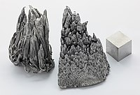

Numero atomico: 39
Massa atomica: 88,91
Temperatura di fusione (°C): 1523
Temperatura di ebolizione (°C): 3345
Energia di prima ionizzazione (kj/mol): 616
Elettronegatività (secondo Pauling): 1,22
Densità: 4,47
Numeri di ossidazione: +3
Configurazione elettronica: 1s2, 2s2, 2p6, 3s2, 3p6, 3d10, 4s2, 4p6, 4d1, 5s2
Maggiori Informazioni